|
|
HELP FIND THE FOLLOWING LOCATIONS
The idea of this page is to identify specific back plates and match them to episodes. This should give us enough information to start identifying where they were originally filmed.
PAGE 58
THE SAINT:
The Russian Prisoner (Peter
Moxey: February 1966)
Rue Jeanne Darc, Beirut, Lebanon:
In Geneva, Professor Karel Jorovitch takes a taxi from the Embassy and
is followed by Russian security officers (Dodge Hall, American
University of Beirut in the background)
(Identified by Sietse Postma, July 2023)
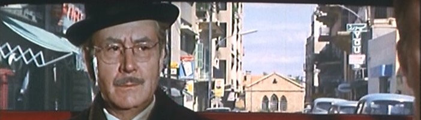
THE BARON:
Something
for a Rainy Day (Cyril Frankel: November 1965)
B17: B4506/ Ashridge
Estate - (World
backgrounds Back Plate 26381).
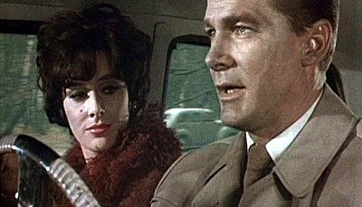
Unknown 1 -
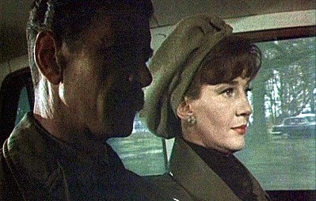
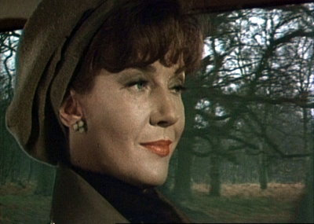
THE BARON:
The High
Terrace (Robert Asher: September 1966)

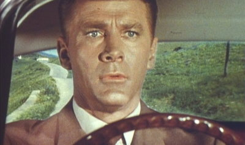

THE BARON:
Countdown
(Robert Asher: October 1966)
Unknown 1
-

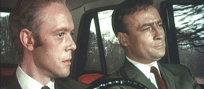

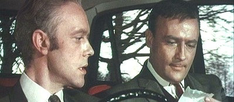
Unknown 2 -

THE AVENGERS: The Bird Who Knew Too Much (Roy Rossotti: October 1966)
Stewarts Drive/Dukes Drive/Egypt Lane, Burnham Beeches -
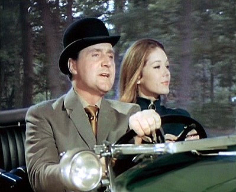
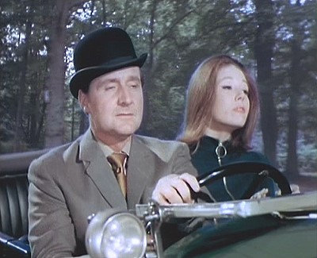
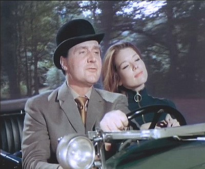
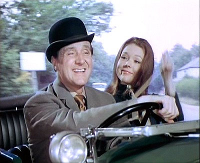

THE SAINT: Little Girl Lost
Stewarts Drive/Dukes Drive/Egypt Lane, Burnham Beeches -

Unknown 2 -
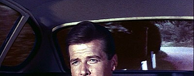
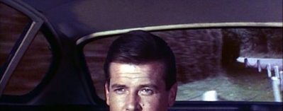
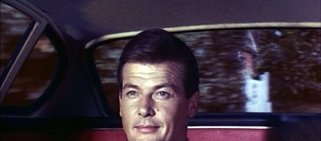
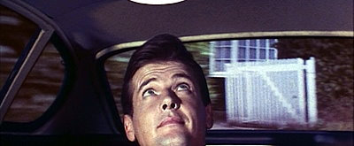
THE AVENGERS: The See-Through Man (Robert Asher: November 1966)
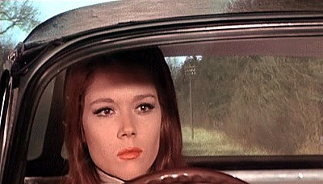
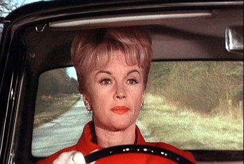
THE AVENGERS: The Winged Avenger (Gordon Flemyng/Peter Duffell: December 1966)
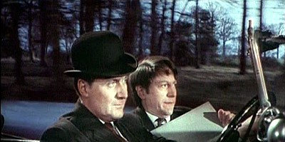
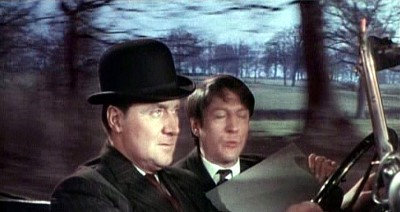
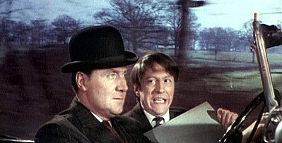
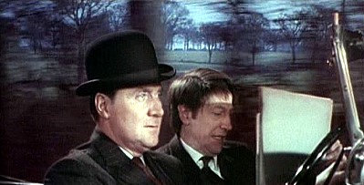
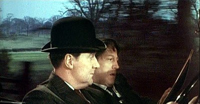
THE AVENGERS:
Death's Door (Sidney Hayers:
May 1967)
Hilfield Lane, Patchett's
Green
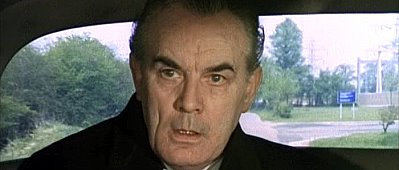
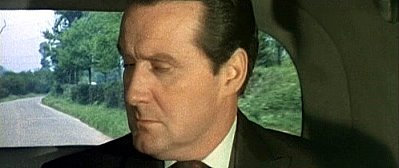
THE AVENGERS: Return of the Cybernauts (Robert Day: June 1967)
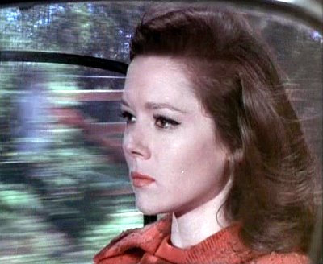
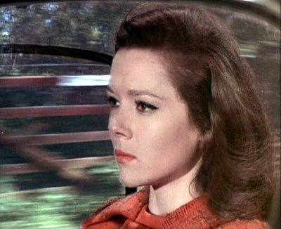
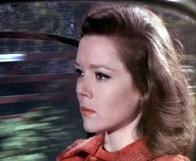
THE AVENGERS:
Dead Man's Treasure
(Sidney Hayers:
July 1967)
Aldenham Road by Haberdashers' Aske's
School gates
-
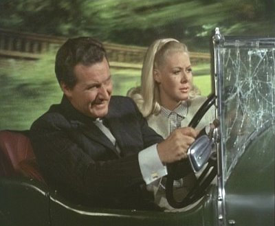
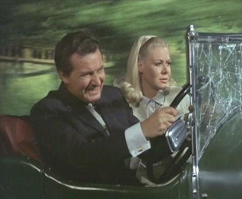
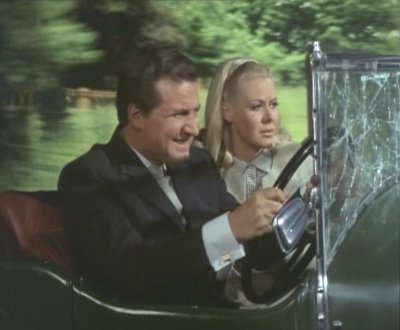
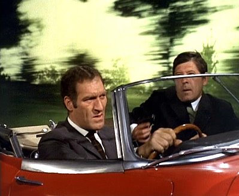
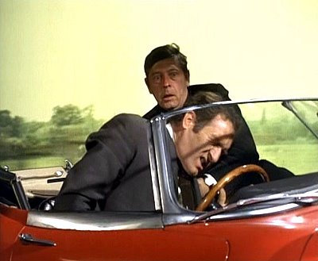
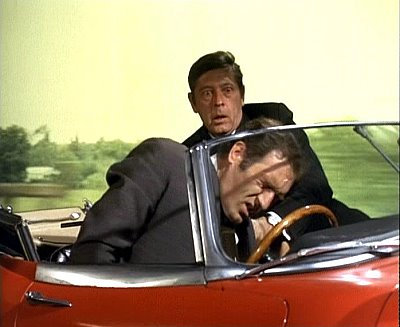
Dagger Lane, Letchmore Heath -
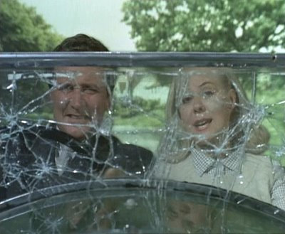
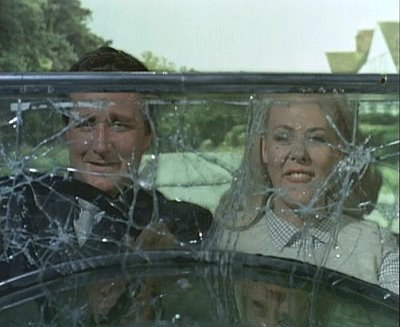
Aldenham Road
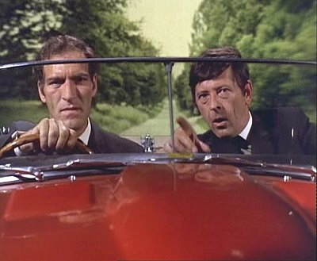
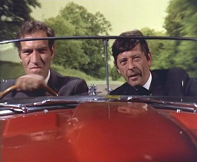
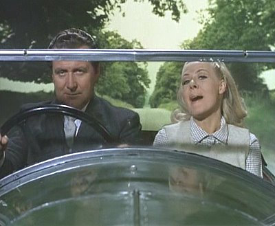
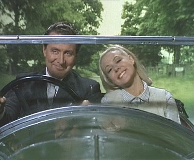
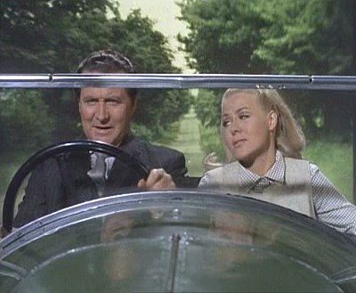
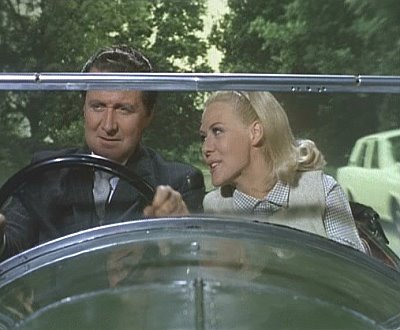
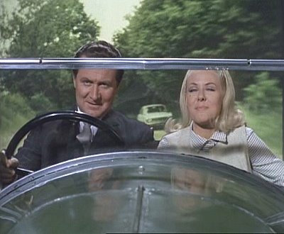
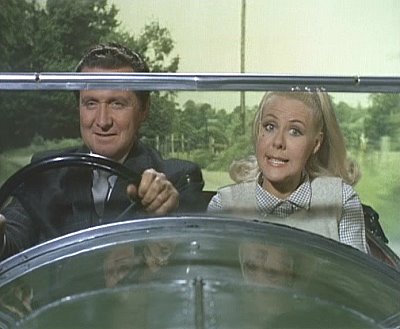
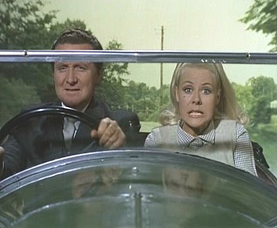
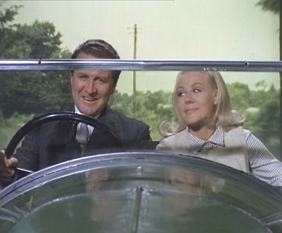
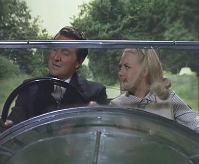
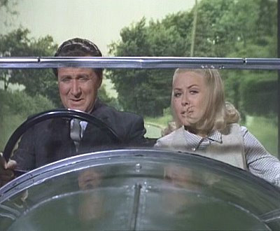
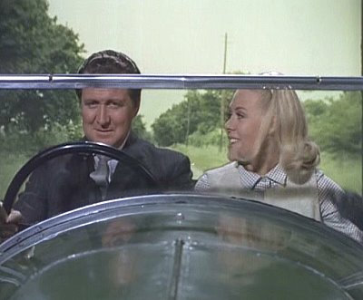
Deeves Hall Lane, Ridge -
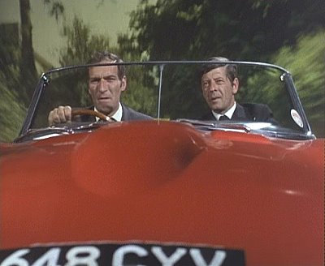
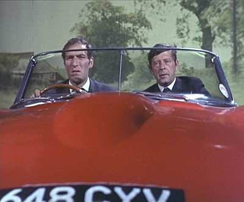
Summerswood Lane
Unknown 1 -
THE AVENGERS:
Murdersville
(Robert
Asher: August 1967)
Silver
Hill, Shenley -
Driveway to Stocks Hotel, Aldbury -
Stewarts Drive/Dukes Drive/Egypt Lane, Burnham Beeches -

THE AVENGERS:
The Positive Negative Man (Robert Day:
August 1967)
M12: Aldenham Road,
Letchmore Heath - Aldenham School
(Identified by Joan
Street, 2016)
Unknown 2 -
THE AVENGERS:
Split!
(Roy Baker: January 1968)
Unknown 1
-
Unknown 2 -
Aldenham Road - see Dead Man's Treasure
THE AVENGERS:
Stay Tuned (Don
Chaffey: November 1968)
Unknown
1 -
Unknown 2 -
Unknown 3 -
Unknown 4 -
Think you know a spot? Need a bigger image? Email me.
< Previous | Index | Avengerland | Next >
Copyright © 2023 Anthony R. McKay